| Widget | What it does | Modes | Example |
|---|---|---|---|
| Operator | Runs a Blender operator | All |  |
| Custom Script | Runs your own Python script | All |  |
| Toggle | Switches an on / off property, or sets an enum or integer value | All |  |
| Enum | Picks one value of an enum or integer | All |  |
| Color Swatch | Shows a colour and opens Blender's colour picker | All | 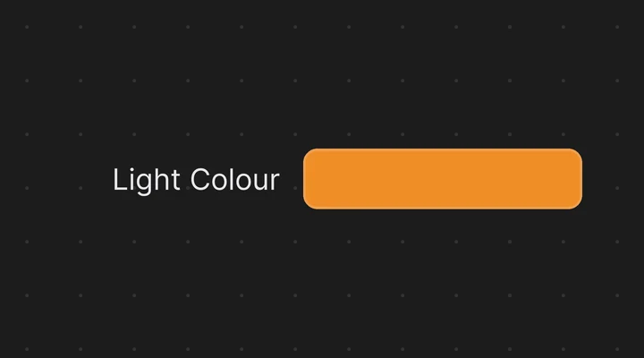 |
| Color Picker | Edits a colour on the canvas (see Color & Brush Widgets) | All |  |
| Color Palette | A grid of colour swatches (see Color & Brush Widgets) | All |  |
| Brush Picker | Makes one brush the active brush (see Color & Brush Widgets) | Brush modes |  |
| Ring Menu | Brushes, toggles and operators in a ring, like a sculpt wheel (see Color & Brush Widgets) | All |  |
| List | Shows layers, material slots, vertex groups and other lists as rows you can click | All |  |
| Lineal slider | Drag along a bar to change a number | All | 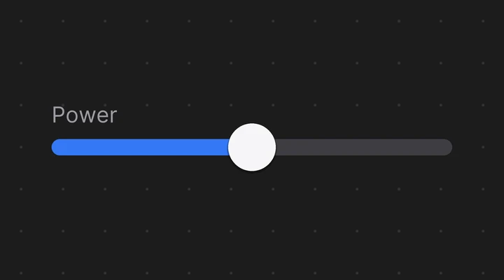 |
| Number Field | A number field like Blender's own | All | 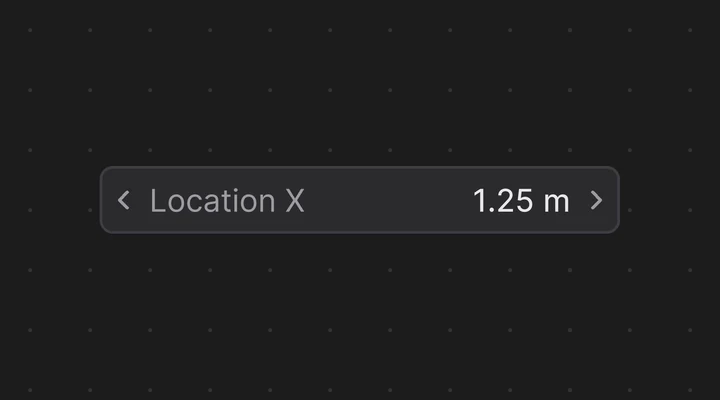 |
| Label | Text, or a property's value | All |  |
| Image | Shows a picture | All | 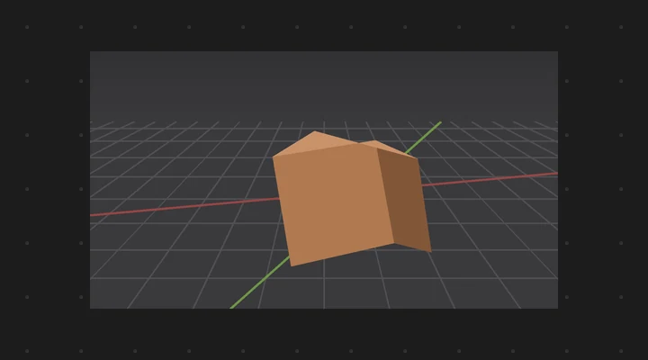 |
| Frame | A titled area, square or round, that holds and moves other widgets | All | 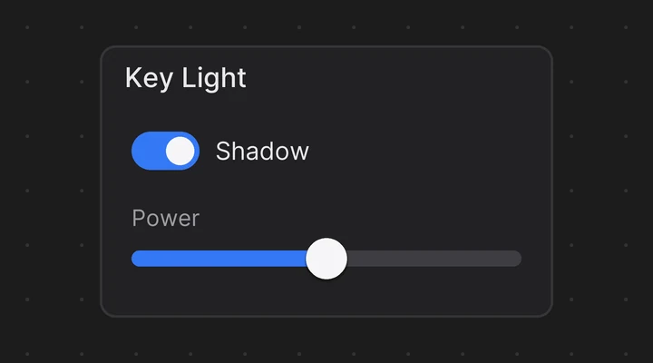 |
| Flex Box | Lines up other widgets in a row or a column | All |  |
| Group | Moves and resizes other widgets as one | All | 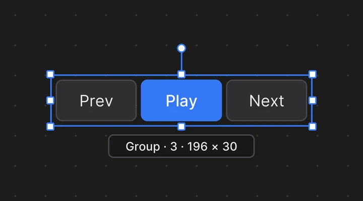 |
The picker adds a few widgets of its own:
| Widget | What it does | Modes | Example |
|---|---|---|---|
| Bone Collection toggle | Shows, hides or solos a bone collection | All |  |
| Radial slider | A knob you drag to change a number | All |  |
| Lineal 2D slider | A pad that drives two properties at once | All | 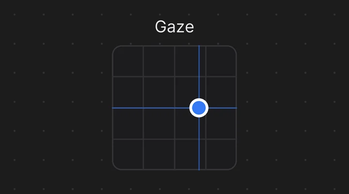 |
| Button, Button Image, Geometry Shape | Bone pickers: select their bone | All |  |
How to add and set up a widget:
- In Edit Mode, press Shift+A and pick a widget (see The Add menu below), or use the header's Add menu.
- Select it and open the sidebar (N), Widget tab.
- Set its Label: Auto (the name of the bound property), Custom (your text) or None.
- Change its look in the Style panel (see Editing Tools > Themes).
- Optional: in the Conditions panel, show it only while a property is on (Visible When) or grey it out (Disabled When). See Binding Properties > Show, hide or disable a widget with a property.
Tooltips#
In Live Mode, rest the mouse on a widget for a moment and a tooltip tells what it does:
- an Operator button: the operator's name and description. When it can't run right now, the tooltip says Can't run here, and why when the operator tells (for example No active object). With Blender's Python Tooltips on, it also shows the operator's Python name.
- a Custom Script button: the script it runs.
- a widget bound to a property (Toggle, sliders, Number Field, Enum, colour widgets, List, a Label showing a value): the property's name and description, and its data path, muted. A problem with the binding (a path that leads nowhere, a read-only property, a property of the wrong kind) shows in the warning colour, as on the widget.
- a Brush Picker: the brush's name.
An Operator or Custom Script button from an untrusted file also says that a click asks before running it.
Other widgets (Frame, Flex Box, Image, a text Label, bone pickers) have no tooltip of their own. To write your own for any widget, select it in Edit Mode and type it in the sidebar, Widget tab, Tooltip panel. Your text replaces the description; the name, the data path and any warning stay. A Label or an Image with a tooltip of yours shows it too, and clicks still go through them; over a widget that takes the click, that widget's tooltip shows instead, since it tells what the click does. A long text is cut short, so keep it to a sentence or two.
As in Blender, the tooltip waits until the mouse rests; moving the mouse hides it and resting again brings it back. It hides when the mouse leaves the widget or the canvas, on a click or a key (Shift, Ctrl or Alt alone keep it), and in Edit Mode. It follows Blender's Preferences > Interface > Tooltips: off there, no widget tooltips either. The Ring Menu has none: it names its items itself.
The Add menu#
Shift+A opens the Add Widget panel over the canvas:
- Search: just start typing, no click needed. The best match is selected, and Enter adds it.
- Categories: the column on the left. Tab goes to the next one.
- Buttons: Operator, Custom Script.
- Data: widgets that show or edit a property, in subcategories: Toggles, Choices, Numbers, Color, Text, Lists. Click Data to see them all under headings, or a subcategory for just those.
- Tools: Brush Picker, Ring Menu.
- Graphics: Image, Backdrop Image.
- Layout: Flex Boxes, Frame.
- In an armature picker, Bone Picker comes first.
- From Property has its own button next to the search: pick a property in Blender and get the right widget for it.
- Cards: click one to add it. The new widget follows the mouse; click to place it. The arrow keys move the selection.
- A widget the layer's mode can't take is dimmed, and the bottom of the panel says why.
- Esc, a right-click or a click outside closes it.
The editor's header has an Add menu with Search... (the panel), From Property... and the same categories, the subcategories under headings. From Live Mode it switches to Edit Mode first.

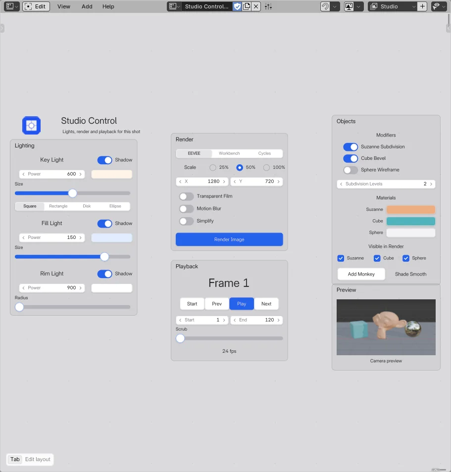
Screenshot

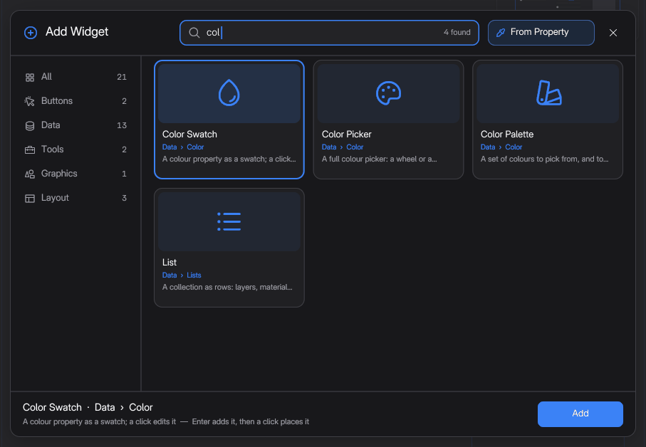
ScreenshotAdd from Property#
The quickest way to add a control:
- Press Shift+A > From Property.
- Right-click any property in Blender's interface (the Properties editor, the sidebar, a node...).
- The widget that controls it appears where you opened the menu, already bound and labelled.
Blender's menu for that property stays open: move away or press Esc to close it. Esc before picking cancels. Undo removes the whole addition in one step.
What you get:
| Property | Widget |
|---|---|
| On / off | Toggle (Checkbox) |
| Enum | Enum (Segmented with 5 items or less, else Dropdown) |
| Number | Number Field |
| Number with a 0–1 style range (Factor or Percentage, with a soft minimum and maximum) | Lineal slider with that range |
| Colour | Color Swatch |
| Vector (Location, Rotation, Scale... 2 to 4 values) | Vertical Flex Box with one Number Field per value |
| Anything else (a name, a data-block, a flag enum, a matrix) | Label that reads the value out |
- Custom properties work too: their subtype and soft range decide, as above.
- Right-clicking one item of a vector adds the whole vector.
- A property the canvas can't reach is reported, and you can pick another one.
Buttons#
Buttons can show a text, an image (Use Image), or both. Fit To Text sizes the button to its label.
Operator#
Runs a Blender operator, like a button of Blender's own interface.
- Pick Operator from UI: click it, then right-click any button in Blender. Its operator and settings are copied.
- Or type it: Context and Action are the two parts of the operator name (
poseandselect_allforpose.select_all). - Operator Properties: the settings it runs with.
The button runs as if you clicked in the 3D Viewport.
Custom Script#
Runs a Python script of your own.
- Click Create Script (later Open Script) to write it in a Text Editor window.
- The script can use
active_object,active_widgetandcanvas. - With an armature active, it can also use
armatureandpose.
Toggles#
A Toggle switches an on / off property. Its Data Path must point to a boolean (for example space_data.).
- Three looks, in the Add menu and in its Shape setting: Radial, Switch and Checkbox.
- A click is one undo step.
Set Value#
Set the toggle's Mode to Set Value (or pick Set Value in the Add menu) to drive an enum or an integer instead.
- Pick the item (or type the number) in Value.
- The toggle is on while the property has that value, and a click sets it.
- A click is one undo step, keyed if Auto Keying is on.
- With Label on Auto, the toggle shows the item's name.
Bone Collection#
A toggle bound to a bone collection of the rig. The Add menu asks for the collection. In the sidebar Bone Collection panel choose Visible (show / hide it) or Solo.
Enum#
An Enum picks one value of a property: a mode, IK / FK, a space or parent switch.
Its Data Path points to:
- an enum property (for example
active_object.), orrotation_mode - an integer, custom properties too (for example a Rigify parent switch,
active_object.).pose. bones["hand_ik. L"]["IK_parent"]
What it shows:
- An enum shows the items of the property, with their names (and their icons in the dropdown list).
- An integer needs a list of Items in the sidebar: each one is a Value and the Label shown for it. Add Item adds the next value. From Range makes one item per value between the property's minimum and maximum. Without items, a small range shows its numbers.
Display (the Add menu has both looks):
- Segmented: every item side by side, the current one highlighted. Click an item to set it. Orientation stacks them in a column (Vertical).
- Dropdown: the current item. Click it to open the list and choose.
- Auto: segmented with 5 items or less, else a dropdown.
A change is one undo step, and it is keyed if Blender's Auto Keying is on.
Color Swatch#
A Color Swatch shows a colour and opens Blender's colour picker for it. Its Data Path points to a colour property, for example:
- a material's Base Color:
active_object.active_material. node_tree. nodes["Principled BSDF"]. inputs[0]. default_value - a material's viewport colour:
active_object.active_material. diffuse_color - a light:
active_object., the world:data. color scene.world.color - an object's viewport display colour:
active_object.color
- The swatch shows the colour the way Blender's own colour fields do.
- A colour with transparency shows the solid colour on its left half and the colour over a checkerboard on its right half.
- Click it in Live Mode to open the colour picker.
- Changes made there are Blender's own, so Ctrl+Z undoes them as usual.
- If Auto Keying is on, the colour is keyed when the picker closes.
List#
A List shows a Blender list as rows, like the lists in the Properties editor. Click a row to make it the active item.
Pick the list in Source:
| Source | Shows | Row toggles |
|---|---|---|
| Grease Pencil Layers | The layers of the active Grease Pencil object, top layer first | Hide, Lock |
| Material Slots | The material slots of the active object | None |
| UV Maps | The UV maps of the active mesh | Active Render |
| Color Attributes | The color attributes of the active mesh | None |
| Shape Keys | The shape keys of the active object | Mute |
| Vertex Groups | The vertex groups of the active object | Lock |
| Bone Collections | The bone collections of the active armature | Visible |
| View Layers | The view layers of the scene | Use for Rendering |
| Custom | Any list: set its Collection Data-Path and the Active Item Data-Path | Your choice |
In Live Mode:
- Click a row to make it the active item. Each click is one undo step.
- Click a toggle at the end of a row (an eye, a lock...) to flip it on that item.
- Double-click a row to rename the item. For a material slot, this renames its material.
- Scroll with the mouse wheel when the rows don't fit. A thin scrollbar shows where you are.
- Click + to add an item, or − to remove the active one. Only the ready-made lists have these buttons.
Settings in the sidebar:
- Row Toggles: the true / false properties drawn on each row, separated by commas, for example
hide, lock. - Row Icon: the icon before each name. Clear it, or turn it off, for names only.
- Reverse Order: lists the last item first.
- Row Height and Add / Remove.
Like other widgets, the list follows the active object. To show one object's list whatever is active, pin it (see Binding Properties).
Sliders#
Drag a slider in Live Mode to change a number. When you release, the change is one undo step, and it is keyed if Blender's Auto Keying is on (see Binding Properties).
- Lineal: a bar. Press it and drag along it: the mouse position sets the value between Min and Max.
- Hold Shift while dragging to move 10 times finer from where the value is (it never jumps, also when you let go of Shift).
- Hold Ctrl while dragging to snap to the property's step (1 degree for an angle).
- Ctrl + click, or double-click, the bar to type the exact value, as in a Number Field. Press Enter to apply it. A typed value is limited by the property only, not by the slider's Min and Max.
- Radial: a knob. Drag right or up to increase. Shift is 10 times finer, Ctrl snaps to steps (5 degrees for an angle).
- Lineal 2D: a pad that drives two properties at once, one per axis (each axis has its own Data Path and range). Great for eyes, jaws or facial controls.
- Look: Eyes draws it as two eyes that look where the value points: a gaze control (see The Armature Picker > Gaze control).
In the Slider panel:
- Unit Type: Value or Angle (the range in degrees), with its Min and Max.
- Show Value: draws the current value while you drag.
Number Field#
A Number Field shows a number as Blender's own fields do: the value in the middle, with its unit (metres, degrees...) in the scene's unit system, and small arrows on the sides. Its Data Path points to an integer or a float (for example active_object. or scene.). It is in the Add menu under Sliders.
In Live Mode:
- Drag left or right to change the value. Shift is 10 times finer, Ctrl snaps to the step. Large values move faster.
- Click an arrow to step the value down or up.
- Click the field (without dragging) to type the exact value. Press Enter to apply it.
A drag, an arrow click or a typed value is one undo step, and it is keyed if Blender's Auto Keying is on.
In the sidebar:
- Step: your own step for the arrows and Ctrl, in degrees for an angle. Off: the property's.
- Precision: decimals shown. Off: the property's.
- Show Arrows.
- The Label goes Inside the field by default, on the left of the value, or beside it.
Label#
Text on the canvas. Source is:
- Text: what you type.
- Property: a property's value, always up to date (a frame number, an object name, on / off, a count...).
For a property: Format (Auto, Number, Percent, Yes / No, Identifier), Precision, Units (writes metres, degrees, seconds... in the scene's unit system), Prefix and Suffix.
Image#
Shows a picture: open or pick one in the Widget Properties panel.
- Scale sizes the widget from the image size and keeps its aspect ratio.
- Fit Image Aspect fixes a widget that was stretched.
Image Look#
Each Image has its own look, in the Image Look section under the image:
- Opacity: how see-through it is, as you see it on a dark or a light canvas alike (on top of the theme's Image opacity).
- Saturation: 0 is grey, 1 the image's own colours, up to 2 for more vivid ones.
- Brightness: 1 as it is; lower is darker, higher is brighter.
- Tint Amount, Tint and Mode: colour the image. Colorize gives it the tint's colour at its own lightness (a duotone: its lightest parts go towards white), Multiply multiplies it by the tint. A Tint Amount of 0 leaves it as it is.
Backdrop#
Turn on Backdrop to put the image behind everything: it draws below every other widget, Frames included. In Live Mode nothing hovers it, it shows no tooltip and clicks go through it to the widgets above. Turn Backdrop off to put a picture on top of a Frame.
Inside a Group or a Flex Box a backdrop stays with its container: it draws below the other widgets of that container, not below the rest of the canvas. Keep a backdrop outside containers to have it behind everything.
Lock (next to Backdrop, the same as the Transform panel's lock) keeps it from being moved by accident while you edit the widgets on top of it. A click still selects it, and a drag that starts on a locked backdrop draws a selection box, as on empty space. A box selects a backdrop only when it holds all of it, like a Frame.
Add > Graphics > Backdrop Image adds one ready to go: Backdrop on, 35 % opacity, no colour. Until you open a picture, it shows a faded placeholder. Open your picture in it and resize it.
Layout widgets#
Frame#
A titled area that holds widgets, like a frame in Blender's node editors. Moving the frame moves what is inside.
- Drop a widget onto a frame to put it in. Drag it out to take it out.
- Ctrl+J frames the selected widgets, Alt+P takes them out.
- Settings: Title, Title Size, a custom colour, and Shrink (the frame fits its contents; resizing the frame turns it off).
- Shape: a rounded Rectangle, or a Circle around its contents. A circle frame stays round: resized, it stays square.
- The checkbox next to Title shows or hides the title. A frame with no title keeps no room for it, so it hugs its contents.

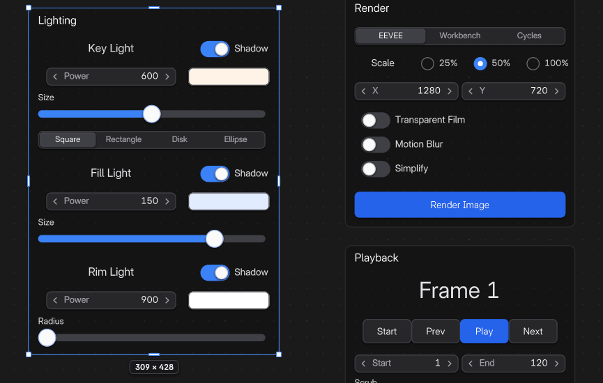
ScreenshotFlex Box#
Lines up its children automatically, like a row or a column of a web page.
- Add a Horizontal Box or a Vertical Box, then drag widgets onto it.
- Drag a child to reorder it, or out of the box to take it out.
- Settings: Direction, Wrap and Lines, Justify (where the free space goes), Align (across), Padding and Gap.
- Each child has a Flex Item panel: Grow, Shrink, Basis, Align Self and fixed sizes.
 Screenshot
ScreenshotGroup#
Widgets that move, rotate and resize as one, with no graphic.
- Select widgets and press Ctrl+G.
- Double-click a group to work inside it, Esc to leave it.
- Alt+G ungroups.
See Editing Tools.

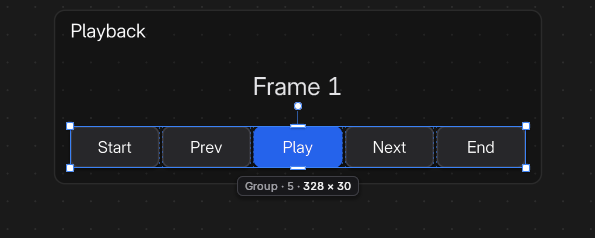
ScreenshotBone pickers#
- Button: a button that selects its bone. Its label is the bone name unless you type another.
- Button Image: the same with an image.
- Geometry Shape: a button with any flat shape. Pick a shape in the Custom Shape panel (built-in shapes, your library or the canvas), or make them from meshes with Utils > Import Geo Collection. Hitbox Precision: Convex (fast) or Precise (exact outline).
Each bone picker can show an IK/FK puck: a small round switch at its edge that flips the limb between IK and FK. Set it in the IK/FK row of the Widget Properties panel.